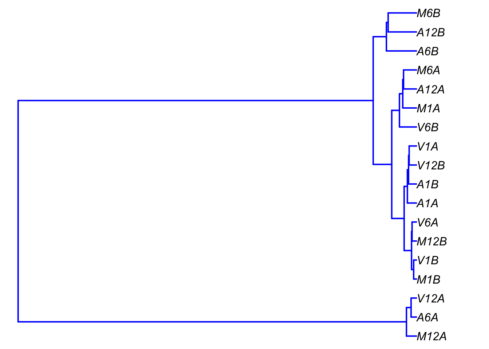
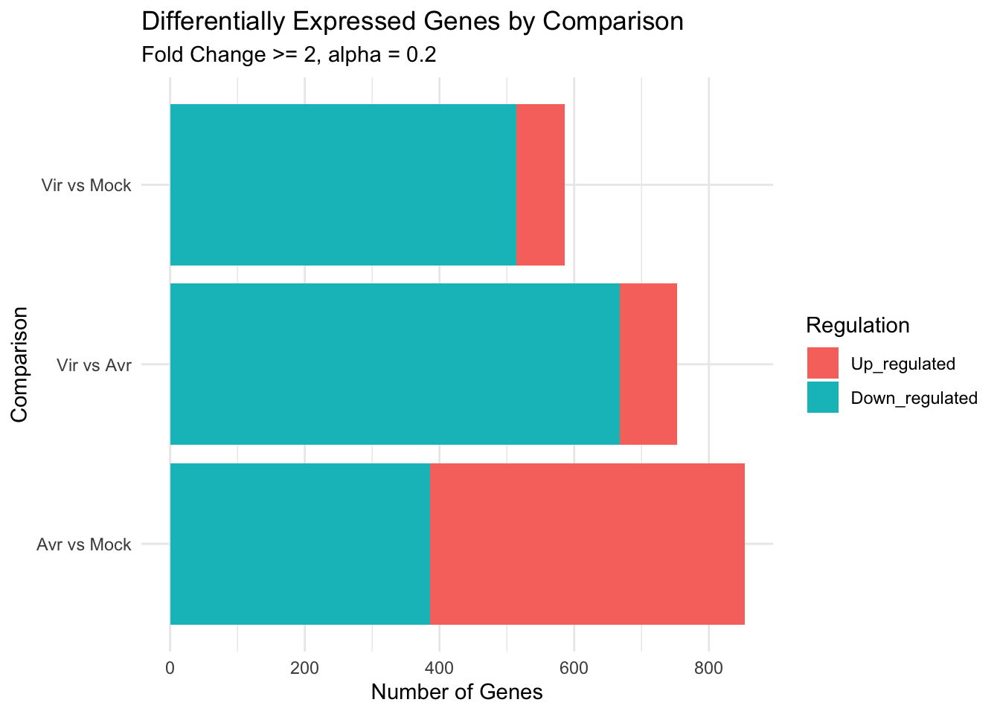
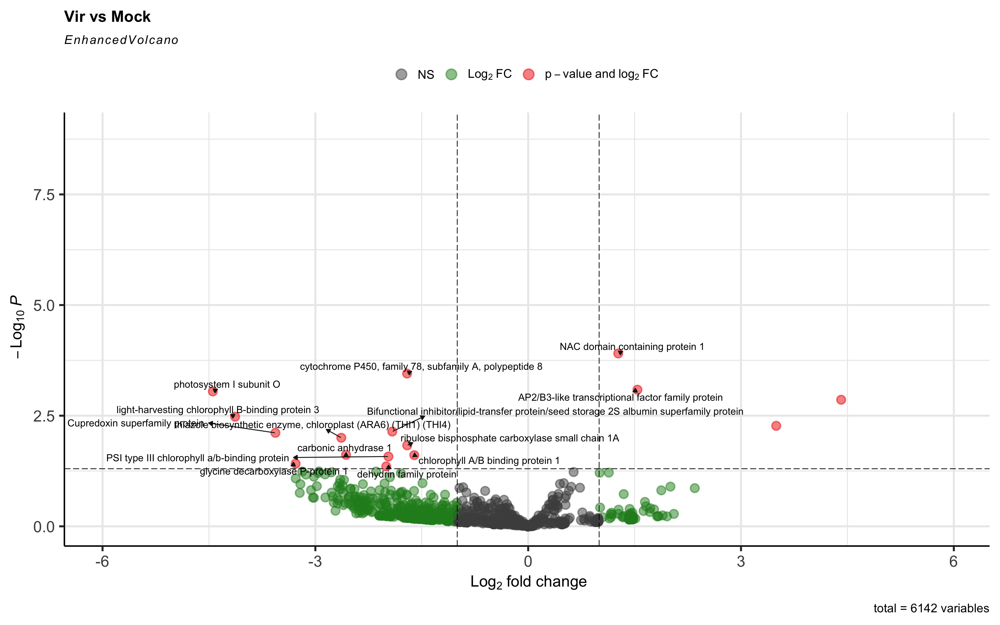
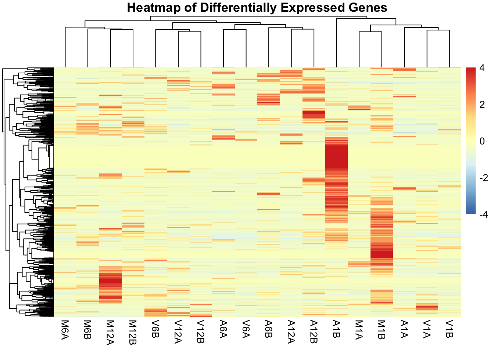
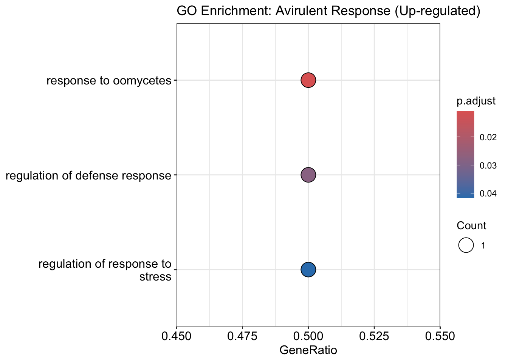

mkdir -p data outputs
wget -nc -P data/ https://ftp.ncbi.nlm.nih.gov/genomes/all/GCF/000/001/735/GCF_000001735.4_TAIR10.1/GCF_000001735.4_TAIR10.1_genomic.fna.gz
gunzip -k data/GCF_000001735.4_TAIR10.1_genomic.fna.gz4 Lab 4: Transcriptomics
5 Learning objectives
Click to expand
By the end of this lab you will be able to:
- Process fastq files in batch
- Analyze RNA-Seq data and produce high quality insights
- Write an analysis pipeline using a common workflow language
- Automate analysis and report writing
6 The set-up
Create a new GitHub repo for this lab.
In RStudio:
- Create a new R Project with version control and connect it to your
GitHubrepo. - Ensure your project contains a
data/directory for raw inputs and anoutputs/directory for generated results. - Start a new Quarto file named
04-lab4.qmd. - Make sure to add
data/andoutputs/folders to the.gitignorefiles.
Commit these two files immediately with a message like Initial commit.
On the terminal make sure that HISAT2 is properly installed by using hisat2 -h, if the set-up package didn’t install hisat2 on your lab computer you can do it manually using conda. No need to create a conda env for hisat2.
Download the Arabidopsis thaliana reference genome from refseq, and uncompress with gunzip.
Remember to add the
.gzand the.fnafile to the.gitignorefile
Download the GFF file with the gene annotation and uncompress it with gunzip.
wget -nc -P data/ https://ftp.ncbi.nlm.nih.gov/genomes/all/GCF/000/001/735/GCF_000001735.4_TAIR10.1/GCF_000001735.4_TAIR10.1_genomic.gtf.gz
gunzip -k data/GCF_000001735.4_TAIR10.1_genomic.gtf.gzRemember to add the
.gzand theGTFfile to the.gitignorefile
Lastly load the required R packages for this lab:
# Ensure required packages are installed
if (!requireNamespace("BiocManager", quietly = TRUE)) {
install.packages("BiocManager")
}
# BiocManager::install(c("clusterProfiler", "EnhancedVolcano", "biomaRt"))
lapply(c(
"docopt", "DT", "pheatmap", "GenomicFeatures", "DESeq2",
"edgeR", "systemPipeR", "systemPipeRdata", "BiocStyle", "GO.db", "dplyr",
"tidyr", "stringr", "Rqc", "QuasR", "ape", "clusterProfiler", "biomaRt", "EnhancedVolcano", "org.At.tair.db"
), require, character.only = TRUE)[[1]]
[1] TRUE
[[2]]
[1] TRUE
[[3]]
[1] TRUE
[[4]]
[1] TRUE
[[5]]
[1] TRUE
[[6]]
[1] TRUE
[[7]]
[1] TRUE
[[8]]
[1] TRUE
[[9]]
[1] TRUE
[[10]]
[1] TRUE
[[11]]
[1] TRUE
[[12]]
[1] TRUE
[[13]]
[1] TRUE
[[14]]
[1] TRUE
[[15]]
[1] TRUE
[[16]]
[1] TRUE
[[17]]
[1] TRUE
[[18]]
[1] TRUE
[[19]]
[1] TRUE
[[20]]
[1] TRUE7 What you will study in this lab
In this lab you will analyze RNA-seq data from Howard et al. 2013. This dataset contains 18 samples sequenced using PE illumina sequencing. The actual dataset is quite large Accession: SRP010938. You will work with a subset of the dataset where each FASTQ file has been subsetted to 90,000-100,000 randomly sampled PE reads that map to the first 100,000 nucleotides of each chromosome of the A. thalina genome.
The RNA-seq data came from A. thaliana plants infected with Pseudomonas syringae, a well-studied plant-pathogen system. This experimental design allows us to understand how plants respond to different types of bacterial challenges.
The dataset contains three treatment groups:
- Mock (Buffer control): Plants treated with buffer only - represents baseline gene expression but accounting to the physical stress of injection
- Avirulent bacteria (AVR): Bacteria carrying avirulence genes that trigger strong plant defenses
- Virulent bacteria (V): Wild-type pathogenic bacteria that can overcome some plant defenses
The experimental design uses a time-course strategy with biological duplicates for every condition:
| Treatment Group | Type | Time Points (h) | Replicates per Time | Total Samples | Focus |
|---|---|---|---|---|---|
| Mock | Control | 1, 6, 12 | 2 | 6 | Baseline stress response. |
| Virulent (Pst) | Susceptible | 1, 6, 12 | 2 | 6 | Successful infection/Immune suppression. |
| Avirulent (avrRps4) | Resistant | 1, 6, 12 | 2 | 6 | Effector-Triggered Immunity (ETI). |
Transcription is a dynamic wave, not a single event. Some defense genes turn on in minutes (1h), while the “Hypersensitive Response” (cell death) peaks much later (12h). A single timepoint would miss half the story. Having duplicates for every timepoint allows us to calculate statistical variance; without it, we cannot tell if a change is due to the bacteria or just biological noise. By comparing Avirulent vs. Virulent across time, we expect to pinpoint exactly when the plant recognizes the intruder and switches from general defense to specific resistance.
RNAseq helps researchers understand how gene expression patterns differ under different condition. Here, we assume that the infection with the virulent and avirulent strains will result in different patterns of gene expression and that samples from similar treatment will show similar pattern of gene expression.
During the lab you will run through all steps of the analysis from QA/QC to analysis. Steps will include:
- Read processing:
- Adapter trimming and quality filtering
- FASTQ quality report
- Alignments against a reference genome
- Map reads to the A. thaliana reference genome
- Alignment stats - proportion of reads that map to genome
- Read count and annotation
- Count the number of reads per sample that map to each gene
- Assign functional annotation to the genes
- Sample-wise correlation analysis and clustering
- Are samples of the same type similar to each other in genes expressed
- Analysis of differential expressed genes (DEGs)
- Are samples of the same type exhibit similar gene expression patterns
- GO term enrichment analysis
- What gene ontologies are found in each sample type
- Gene-wise clustering
- Do samples from the same type show expression of genes of similar ontology (e.g. more infection resistance genes)
8 About the lab and assignment
Please read this part well
- Lab assignment questions are interspersed throughout the manual
- Unlike other labs, your answers to some of the question is key to completing the lab
- Make sure to pay attention to that, and answer these questions appropriately
9 Now, to the lab
9.1 Accessing the RNAseq data and sample data
36 sub sampled fastq files can be found in the external data folder of the systemPipeRdata package, representing 18 samples. The path to it can be found using the pathList() function looking for $fastqdir.
#e.g.1 get the path
fq_path <- systemPipeRdata::pathList()$fastqdir
#e.g.2 list the files
fq_files <- list.files(fq_path)
head(fq_files)[1] "SRR446027_1.fastq.gz" "SRR446027_2.fastq.gz" "SRR446028_1.fastq.gz"
[4] "SRR446028_2.fastq.gz" "SRR446029_1.fastq.gz" "SRR446029_2.fastq.gz"As you can see the file names are not very descriptive, therefore we will also import the sample data (or meta data) table that will tell us which sample does each fastq file represent.
meta_data <- read.table(
system.file("extdata/param/targetsPE.txt", package="systemPipeRdata"),
header = TRUE)You can use head() to visualize the metadata table. Note that these fastq files represent paired end sequencing meaning that each sequenced fragment was sequenced both from the forward and the the reverse direction therefore every fragment is represented as a read in the fielname_1.fastq file which represents the forward reads and in the filename_2.fastq file which represents the corresponding reverse reads. PE sequencing offers a more robust way to obtain data and account for sequencing errors. That’s the reason for having 36 files for 18 samples, each sample is represented by a forward and a reverse file.
9.1.1 Question 1
Note that the path to the fastq files are ./data/file.fastq.
- In your Quarto file, include a code chunk that reads the metadata table.
- Include a code chunk that replaces the
./data/in columns FileName1 and FileName2 with the actual path to the fastq files obtained earlier (this will be useful for your next question) - Use the DT package to output the metadata table onto your Quarto file.
9.2 Read processing
Garbage in garbage out, our next steps involve QC of the fastq.gz files making sure that for downstream analysis you will use good quality data.
9.2.1 Question 2
- Use the
Rqcpackage to generate a QC report for the reads include it as a code chunk in your Quarto file.
From your Rqc report:
Generate 3 per-cycle Q-score box plots for files 1-12, 13-24, 25-36. Make sure the facets use a black and white theme. Are there any samples with much longer reads than others? What’s the shortest number of cycles? Include the plots and the code chunk in your Quarto file.
Generate 3 base call frequency plots for files 1-12, 13-24, 25-36, does any sample have significant N calls? Include the plots and the code chunk in your Quarto file.
9.2.2 Question 3
Write a code chunk that iterates over your PE files and uses the QuasR package to trim and filter the reads (hint this is where your metadata file be very useful).
Note
Note: QuasR, and ShortRead for that matter, aren’t optimized for matching filtered reads between PE reads especially if that includes adapter trimming. Therefore your code should only focus on file 1 from every PE files
- Make sure it removes the following adapter sequence “GCCCGGGTAA”
- Make sure it trims the final 3 bases
- Make sure that it removes reads with more than 1 N
- Make sure that the output name now includes processed in it
- Make sure that the files are outputted to a
outputs/processed_fastqfolder in your project directory - Don’t forget to add this folder to the
.gitignorefile - Make sure that the file names and path in the metadata table are also updated
- Include the code chunk in your Quarto file
dir.create("outputs/processed_fastq", recursive = TRUE)
for (i in seq_along(meta_data$FileName1)) {
fastqfiles <- c(meta_data$FileName1[i], meta_data$FileName2[i])
l <- length(stringr::str_split_1(meta_data$FileName1[i], "\\/"))
outfiles <- c(paste0("outputs/processed_fastq/", stringr::str_split_1(meta_data$FileName1[i], "\\/")[l], "_processed.fastq.gz"),
paste0("outputs/processed_fastq/", stringr::str_split_1(meta_data$FileName2[i], "\\/")[l], "_processed.fastq.gz"))
QuasR::preprocessReads(fastqfiles, outfiles,
nBases=1,
truncateEndBases=3,
Lpattern="GCCCGGGTAA",
minLength=40)
meta_data$FileName1[i] <- outfiles[1]
meta_data$FileName2[i] <- outfiles[2]
}9.3 Alignments
Why aren’t we using a popular short-read aligner like Bowtie2, or the long-read aligner Minimap2 from the previous lab?
Arabidopsis genes contain introns, and our mature mRNA has these introns spliced out. If a 100bp short read spans across an exon-exon junction, a standard DNA-centric aligner will treat the thousand-base genomic gap as a massive indel and often fail to map the read entirely. We use HISAT2 because it is a splice-aware aligner designed specifically to recognize these junctions in short-read RNA-seq data.
Next on the workflow is mapping the processed reads to the reference A thaliana genome (TAIR10.1) which you have downloaded. We will go over graph aligners.
9.3.1 Indexing the reference genome
The first step in aligning the reads to the genome is to create an index list for the reference. The reads would be aligned against the index list, which makes the alignment process more computationally efficient.
Note
The indexing function does not accept compressed files, if you haven’t yet, make sure to uncompress the TAIR10.1 genome assembly you have downloaded.
Previously you called external tools directly from the terminal, now you will call system functions directly from R. The code chunk below uses the R function system2(), which allows R to to invoke system commands, to run the command hisat2-build which builds the index list. system2() accepts a few variables. command is the command being passed to the system, args is where the list of arguments the the command accepts are specified. In this case:
-p 8the number of CPU cores to be used, in this case 8- the
.fnafile is the reference genome - the
outputs/hisat2_index/tair10_1_indexis the output directory to which the index files (.ht2files) will be written and the base name for said index files (tair10_index). Note that before that you will need to create the output directory. stdout = TRUEandstderr = TRUEcapture the output of the command either standard (stdout) and error (stderr)
The function runs within the tryCatch function that provides basic error handling.
#create the output directory
dir.create("outputs/hisat2_index", recursive = TRUE)
at_genome <- "data/GCF_000001735.4_TAIR10.1_genomic.fna"
#Use system2 to run hisat2 from within R
tryCatch({
system2(command = "hisat2-build",
args = c("-p","8", at_genome, "outputs/hisat2_index/tair10_1_index"),
stdout = TRUE, stderr = TRUE)
}, error = function(e) {
paste("hisat2-build", "indexing failed with error:", e$message)
})9.3.2 Mapping the reads to the indexed genome
Now that the reference genome has been indexed the processed reads can be mapped to it using the hisat2 command. The hisat2 command will map every set of PE files to the genome and output a sam file for each. Those sam files would then need to be converted to sorted bam files using samtools.
Here’s a basic structure for running a fastq files using hisat2:
Important
Note: you should replace the path to the hisat2_index and the processed fastq to match the correct path for your files
Note2: hisat2 does not accept .gz file so make sure to gunzip your processed fastq files if you haven’t yet
hisat2 -x outputs/hisat2_index/tair10_1_index outputs/processed_fastq/SRR446027_1.fastq.gz_processed.fastq -p 8 -S outputs/sam_files/file1.sam-x denotes the reference base name -U denotes the first file of the PE files (if treating as single end) -p denotes number of CPU processors -S denotes the sam file output
9.3.3 Question 4: aligning the reads
Add a code chunk to your Quarto file that:
- Creates output directories for the sam and bam files name them
outputs/sam_filesandoutputs/bam_filesrespectively, make sure to add them to your.gitignorefile - Use the
system2function to loops through the paired fastq files and feeds them tohisat2to get the sam files (hint, this is where your metadata table will become very useful)- Remember that you’re only using the file 1 files
- Use the
SampleNamecolumn from themeta_datadataframe to make sure that the resultingsamfiles each are named after the sample they represent (e.g.V1A.sam)
- Within the loop feed the required arguments to the
samtoolscommands to subsequentsystem2calls so that the sam files would be converted to bam files and that the bam files would be sorted and indexed.- Remember to add
_sortedto the sortedbamfiles (e.g.V1A_sorted.bam)
- Remember to add
- Make sure to place the system2 calls within
tryCatch. - Make sure that the
tryCatchfor all system calls is assigned to a variable to capture the output log from those calls- Write that variable from the
hisat2assamplename_hisat2.login the bam_files folder using thewriteLinesfunction.
- Write that variable from the
9.3.4 Reading alignment stats
hisat2 outputs log files with some alignment stats per sam file. The following code chunk iterates over each of the logs that will be outputted by your answer to question 4, grabs the last line which specifies the total percent of reads aligned and extracts the numeric value.
# get the folder
hisat2_logs_dir <- "outputs/bam_files"
# 1. Get a list of all HISAT2 log files
log_files <- list.files(hisat2_logs_dir, pattern = "\\.hisat2\\.log$", full.names = TRUE)
if(length(log_files) > 0) {
percent_aligned <- 1:length(log_files)
for (i in seq_along(percent_aligned)) {
percent_aligned[i] <- readLines(log_files[i])[length(readLines(log_files[i]))]
}
align_df <- data.frame(samplename = sort(meta_data$SampleName), percent_aligned)
align_df <- align_df %>%
mutate(percent_aligned = as.numeric(stringr::str_split_i(align_df$percent_aligned, "%", 1)))
head(align_df)
} else {
print("No HISAT2 log files found yet. Run the alignment step first.")
} samplename percent_aligned
1 A12A 95.85
2 A12B 95.03
3 A1A 96.64
4 A1B 93.12
5 A6A 95.34
6 A6B 95.80Judging by the output, the first 6 samples each had around 95% of the reads aligned to the reference. This allows us to proceed being confident in our analysis.
9.3.4.1 Assignment question 5: alignment stats
- Write a code chunk that uses the
DTpackage to output thealign_dfdataframe as an interactive table on your Quarto file. - Write a code chunk that use
ggplot2to plot a box plot of alignment percent, make sure it is part of your Quarto file.
9.4 Counting how many reads mapped for each gene
This lab handles transcriptomics data, one of the questions that can be answered by transcriptomics data is how do samples differ with respect to gene expression. The first step to answering this question is by counting how many reads mapped to each gene in the genome. the general concept is that the larger the count of reads that map to a gene the higher it’s expression. Of course this is just a general concept and some normalization will need to be applied, we will discuss this in depth during lecture. To generate the count table we will use the featureCounts function from the Rsubread package. Subread is another aligner that is optimize to align short reads, and it can work with genomic intervals to map reads to annotation tables. featureCounts require a GTF file as it’s input for annotation table, GTF is a form of GFF file with a more strict structure compared to the general GFF format. You will use the GTF file you downloaded at the beginning of the lab.
featureCounts can receive a list of bam files as input. Note that the use of the $ regular expression when listing the bam file. This denotes that the string has to end with bam. This is because you also have _sorted.bam.bai files in your folder since you indexed the sorted bam files.
#list bam files
bfiles <- list.files("outputs/bam_files", pattern = "_sorted.bam$", full.names = TRUE)
#Counting how many reads correspond to each gene
gene_count_list <- Rsubread::featureCounts(
files = bfiles,
annot.ext = "data/GCF_000001735.4_TAIR10.1_genomic.gtf",
isGTFAnnotationFile = TRUE,
allowMultiOverlap = FALSE,
isPairedEnd = FALSE, nthreads = 8,
minMQS = 10,
GTF.featureType = "exon",
GTF.attrType = "gene_id"
)Let’s examine the structure of the elements of the resulting list from featureCounts. First is the count table, this is going to be the input used in downstream analysis steps like differential gene expression.
if(exists("gene_count_list")) {
glimpse(gene_count_list$counts)[1:5,1:5]
} int [1:38295, 1:18] 532 107 0 35 1224 0 18 733 0 520 ...
- attr(*, "dimnames")=List of 2
..$ : chr [1:38295] "AT1G01010" "AT1G01020" "AT1G03987" "AT1G01030" ...
..$ : chr [1:18] "A12A_sorted.bam" "A12B_sorted.bam" "A1A_sorted.bam" "A1B_sorted.bam" ... A12A_sorted.bam A12B_sorted.bam A1A_sorted.bam A1B_sorted.bam
AT1G01010 532 441 371 209
AT1G01020 107 93 126 137
AT1G03987 0 0 3 0
AT1G01030 35 53 170 81
AT1G01040 1224 637 949 723
A6A_sorted.bam
AT1G01010 537
AT1G01020 109
AT1G03987 0
AT1G01030 26
AT1G01040 821The row names show the accession number for each gene annotated in the TAIR database e.g. AT1G01010. The column names are your samples, values are read counts per gene per sample.
Next lets look at the annotation table, this table shows you the Refseq accession numbers for each exon that mapped to each gene, along with it’s length, orientation and coordinates.
if(exists("gene_count_list")) {
glimpse(gene_count_list$annotation)[1:5,]
}Rows: 38,295
Columns: 6
$ GeneID <chr> "AT1G01010", "AT1G01020", "AT1G03987", "AT1G01030", "AT1G01040"…
$ Chr <chr> "NC_003070.9;NC_003070.9;NC_003070.9;NC_003070.9;NC_003070.9;NC…
$ Start <chr> "3631;3996;4486;4706;5174;5439", "6788;6788;6788;6788;6788;6788…
$ End <chr> "3913;4276;4605;5095;5326;5899", "7069;7069;7069;7069;7069;7069…
$ Strand <chr> "+;+;+;+;+;+", "-;-;-;-;-;-;-;-;-;-;-;-;-;-;-;-;-;-;-;-;-;-;-;-…
$ Length <int> 1688, 1571, 272, 1905, 6279, 788, 207, 1165, 283, 3421, 1831, 2… GeneID
1 AT1G01010
2 AT1G01020
3 AT1G03987
4 AT1G01030
5 AT1G01040
Chr
1 NC_003070.9;NC_003070.9;NC_003070.9;NC_003070.9;NC_003070.9;NC_003070.9
2 NC_003070.9;NC_003070.9;NC_003070.9;NC_003070.9;NC_003070.9;NC_003070.9;NC_003070.9;NC_003070.9;NC_003070.9;NC_003070.9;NC_003070.9;NC_003070.9;NC_003070.9;NC_003070.9;NC_003070.9;NC_003070.9;NC_003070.9;NC_003070.9;NC_003070.9;NC_003070.9;NC_003070.9;NC_003070.9;NC_003070.9;NC_003070.9;NC_003070.9;NC_003070.9;NC_003070.9;NC_003070.9;NC_003070.9;NC_003070.9;NC_003070.9;NC_003070.9;NC_003070.9;NC_003070.9;NC_003070.9;NC_003070.9;NC_003070.9;NC_003070.9;NC_003070.9;NC_003070.9;NC_003070.9;NC_003070.9;NC_003070.9;NC_003070.9;NC_003070.9;NC_003070.9;NC_003070.9;NC_003070.9
3 NC_003070.9
4 NC_003070.9;NC_003070.9;NC_003070.9;NC_003070.9;NC_003070.9
5 NC_003070.9;NC_003070.9;NC_003070.9;NC_003070.9;NC_003070.9;NC_003070.9;NC_003070.9;NC_003070.9;NC_003070.9;NC_003070.9;NC_003070.9;NC_003070.9;NC_003070.9;NC_003070.9;NC_003070.9;NC_003070.9;NC_003070.9;NC_003070.9;NC_003070.9;NC_003070.9;NC_003070.9;NC_003070.9;NC_003070.9;NC_003070.9;NC_003070.9;NC_003070.9;NC_003070.9;NC_003070.9;NC_003070.9;NC_003070.9;NC_003070.9;NC_003070.9;NC_003070.9;NC_003070.9;NC_003070.9;NC_003070.9;NC_003070.9;NC_003070.9;NC_003070.9;NC_003070.9
Start
1 3631;3996;4486;4706;5174;5439
2 6788;6788;6788;6788;6788;6788;7157;7157;7157;7157;7157;7157;7384;7384;7384;7384;7564;7564;7564;7564;7564;7564;7762;7762;7762;7762;7762;7942;7942;7942;7942;7942;8236;8236;8236;8236;8236;8236;8417;8417;8417;8417;8571;8571;8571;8594;8594;8594
3 11101
4 11649;11649;12424;13335;13335
5 23121;23416;24542;24542;24752;24752;25041;25041;25524;25524;25825;25825;26081;26081;26292;26292;26543;26543;26862;26862;27099;27099;27372;27372;27618;27618;27803;27803;28708;28708;28890;28890;29160;29160;30147;30147;30410;30410;30902;30902
End
1 3913;4276;4605;5095;5326;5899
2 7069;7069;7069;7069;7069;7069;7450;7450;7232;7232;7232;7232;7450;7450;7450;7450;7649;7649;7649;7649;7649;7649;7835;7835;7835;7835;7835;7987;7987;7987;7987;7987;8325;8325;8464;8325;8464;8325;8464;8464;8464;8464;8737;9130;9130;8737;9130;9130
3 11372
4 12354;13173;13173;13714;13714
5 24451;24451;24655;24655;24962;24962;25435;25435;25743;25743;25997;25997;26203;26203;26452;26452;26776;26776;27012;27012;27281;27281;27536;27533;27713;27713;28431;28431;28805;28805;29080;29080;30065;30065;30311;30311;30816;30816;31120;31227
Strand
1 +;+;+;+;+;+
2 -;-;-;-;-;-;-;-;-;-;-;-;-;-;-;-;-;-;-;-;-;-;-;-;-;-;-;-;-;-;-;-;-;-;-;-;-;-;-;-;-;-;-;-;-;-;-;-
3 +
4 -;-;-;-;-
5 +;+;+;+;+;+;+;+;+;+;+;+;+;+;+;+;+;+;+;+;+;+;+;+;+;+;+;+;+;+;+;+;+;+;+;+;+;+;+;+
Length
1 1688
2 1571
3 272
4 1905
5 6279There’s also a stats table that tells you how many reads per sample were mapped vs how many did not due to various reasons.
if(exists("gene_count_list")) {
glimpse(gene_count_list$stat)[,1:5]
}Rows: 14
Columns: 19
$ Status <chr> "Assigned", "Unassigned_Unmapped", "Unassigned_Read_Ty…
$ A12A_sorted.bam <int> 63480, 3035, 0, 0, 2438, 0, 0, 0, 0, 0, 0, 2019, 0, 34…
$ A12B_sorted.bam <int> 66286, 3927, 0, 0, 3949, 0, 0, 0, 0, 0, 0, 2710, 0, 42…
$ A1A_sorted.bam <int> 55397, 2134, 0, 0, 2348, 0, 0, 0, 0, 0, 0, 1754, 0, 31…
$ A1B_sorted.bam <int> 49211, 4186, 0, 0, 3231, 0, 0, 0, 0, 0, 0, 3268, 0, 25…
$ A6A_sorted.bam <int> 59039, 3187, 0, 0, 1858, 0, 0, 0, 0, 0, 0, 1641, 0, 37…
$ A6B_sorted.bam <int> 67038, 3274, 0, 0, 4289, 0, 0, 0, 0, 0, 0, 2028, 0, 38…
$ M12A_sorted.bam <int> 45530, 1724, 0, 0, 1651, 0, 0, 0, 0, 0, 0, 1390, 0, 22…
$ M12B_sorted.bam <int> 59581, 4044, 0, 0, 2146, 0, 0, 0, 0, 0, 0, 2104, 0, 39…
$ M1A_sorted.bam <int> 48900, 2281, 0, 0, 3002, 0, 0, 0, 0, 0, 0, 2283, 0, 25…
$ M1B_sorted.bam <int> 54644, 4791, 0, 0, 3052, 0, 0, 0, 0, 0, 0, 3208, 0, 25…
$ M6A_sorted.bam <int> 60842, 3826, 0, 0, 2722, 0, 0, 0, 0, 0, 0, 1930, 0, 36…
$ M6B_sorted.bam <int> 56439, 3993, 0, 0, 2429, 0, 0, 0, 0, 0, 0, 1887, 0, 43…
$ V12A_sorted.bam <int> 47430, 1758, 0, 0, 2244, 0, 0, 0, 0, 0, 0, 1481, 0, 47…
$ V12B_sorted.bam <int> 60460, 3794, 0, 0, 2883, 0, 0, 0, 0, 0, 0, 2301, 0, 58…
$ V1A_sorted.bam <int> 50181, 4183, 0, 0, 2477, 0, 0, 0, 0, 0, 0, 2366, 0, 32…
$ V1B_sorted.bam <int> 57309, 1049, 0, 0, 2614, 0, 0, 0, 0, 0, 0, 2240, 0, 34…
$ V6A_sorted.bam <int> 63079, 2860, 0, 0, 1958, 0, 0, 0, 0, 0, 0, 1713, 0, 41…
$ V6B_sorted.bam <int> 59069, 3672, 0, 0, 1625, 0, 0, 0, 0, 0, 0, 1780, 0, 54… Status A12A_sorted.bam A12B_sorted.bam A1A_sorted.bam
1 Assigned 63480 66286 55397
2 Unassigned_Unmapped 3035 3927 2134
3 Unassigned_Read_Type 0 0 0
4 Unassigned_Singleton 0 0 0
5 Unassigned_MappingQuality 2438 3949 2348
6 Unassigned_Chimera 0 0 0
7 Unassigned_FragmentLength 0 0 0
8 Unassigned_Duplicate 0 0 0
9 Unassigned_MultiMapping 0 0 0
10 Unassigned_Secondary 0 0 0
11 Unassigned_NonSplit 0 0 0
12 Unassigned_NoFeatures 2019 2710 1754
13 Unassigned_Overlapping_Length 0 0 0
14 Unassigned_Ambiguity 3415 4267 3193
A1B_sorted.bam
1 49211
2 4186
3 0
4 0
5 3231
6 0
7 0
8 0
9 0
10 0
11 0
12 3268
13 0
14 25719.4.1 Question 6: the count table
Add a code chunk to your Quarto file that:
- Assigns
$countto a variable namedcount_table. - Removes the
_sort.bamfrom the column names. - Filter out genes with no reads mapped to them across all samples.
- Uses DT to output the variable as an interactive table.
9.5 Sample-wise correlation analysis and clustering
The previous step produced a raw count table that represents the number of transcripts per gene detected in each sample. This table will be subsequently used for differential gene expression (DGE) analysis and to cluster samples based on how similar their transcript compositions are. DGE will be done with the DESeq2 package.
9.5.1 Data prep for DESeq2
DESeq2 works with dds objects, those are S4 objects that hold information from your count table and a metadata table. The metadata table rows has to carry the names of the count table columns and it has to be in the exact order as well. Columns that will be used as grouping information for DEG comparison have to be factors and not regular character vectors. The code chunk below will guide you through this, you will create two dds objects, dds1 with grouping based on Avirulent (Avr), Mock, and Virulent (Vir), and dds2 which compares the sample types themselves (e.g. A6, M12, V0 etc).
if(exists("count_table")) {
coldata <- meta_data %>% dplyr::select(SampleName,SampleLong,Factor) %>%
dplyr::mutate(SampleLong=str_split_i(SampleLong, "\\.",1)) %>%
dplyr::rename(condition = SampleLong) %>%
dplyr::mutate(condition = factor(condition)) %>%
dplyr::mutate(Factor = factor(Factor))
base::rownames(coldata) <- coldata$SampleName
coldata <- coldata %>% mutate(SampleName = factor(SampleName))
coldata$type <- factor(rep("single-read", nrow(coldata)))
coldata <- coldata[base::match(base::colnames(count_table), rownames(coldata)),]
dds1 <- DESeqDataSetFromMatrix(countData = count_table,
colData = coldata,
design = ~ condition)
dds2 <- DESeqDataSetFromMatrix(countData = count_table,
colData = coldata,
design = ~ Factor)
}9.5.2 Sample correlation based on transcript abundance table
Next lets cluster the samples based on how well their expression patterns correlate. The count table is log transformed to remove bias from highly abundant transcripts, and Spearman correlation is calculated.
if(exists("dds1")) {
d <- cor(assay(rlog(dds1)), method = "spearman")
hc <- hclust(dist(1 - d))
plot.phylo(as.phylo(hc), type = "p", edge.col = "blue", edge.width = 2,
show.node.label = TRUE, no.margin = TRUE)
}
When you generate this plot, you will see “trees” or lines connecting the samples, called dendrograms. Hierarchical clustering is the algorithm that builds these trees, grouping the most similar items together. In this case, we are clustering the columns (samples). This is a critical quality control step: your biological replicates must cluster together. If they do not, it suggests technical variation might be overpowering the biological signal.
9.5.3 Analyzing differential gene expression (DGE) with DESeq2
When looking at expression data we are looking at log2FoldChange. The log2FoldChange represents the magnitude of expression difference between conditions on a log scale. The p-value indicates the statistical significance, while the FDR (false discovery rate) corrects for multiple testing.
if(exists("dds1")) {
dds1_results <- DESeq(dds1)
dds2_results <- DESeq(dds2)
res1 <- DESeq2::results(dds1_results)
res2 <- DESeq2::results(dds2_results)
}9.5.3.1 Comparing Vir, Mock, and Avr broad overview
if(exists("dds1_results")) {
res_vir_mock <- DESeq2::results(dds1_results, contrast = c("condition", "Vir", "Mock"), alpha = 0.2)
res_avr_mock <- DESeq2::results(dds1_results, contrast = c("condition", "Avr", "Mock"), alpha = 0.2)
res_vir_avr <- DESeq2::results(dds1_results, contrast = c("condition", "Vir", "Avr"), alpha = 0.2)
filter_and_count <- function(res_obj, comparison_name, fc_threshold = 2) {
res_filtered <- res_obj[!is.na(res_obj$padj) & !is.na(res_obj$log2FoldChange), ]
sig_genes <- res_filtered[abs(res_filtered$log2FoldChange) >= log2(fc_threshold), ]
up_regulated <- sum(sig_genes$log2FoldChange > 0)
down_regulated <- sum(sig_genes$log2FoldChange < 0)
return(data.frame(
Comparison = comparison_name,
Up_regulated = up_regulated,
Down_regulated = down_regulated
))
}
results_summary <- rbind(
filter_and_count(res_vir_mock, "Vir vs Mock"),
filter_and_count(res_avr_mock, "Avr vs Mock"),
filter_and_count(res_vir_avr, "Vir vs Avr")
)
print(results_summary)
plot_data <- results_summary %>%
pivot_longer(cols = c(Up_regulated, Down_regulated),
names_to = "Regulation",
values_to = "Count") %>%
mutate(Regulation = factor(Regulation, levels = c("Up_regulated", "Down_regulated")))
p <- ggplot(plot_data, aes(x = Comparison, y = Count, fill = Regulation)) +
geom_bar(stat = "identity", position = "stack") +
coord_flip() +
labs(
title = "Differentially Expressed Genes by Comparison",
subtitle = "Fold Change >= 2, alpha = 0.2",
x = "Comparison",
y = "Number of Genes",
fill = "Regulation"
) +
theme_minimal()
print(p)
} Comparison Up_regulated Down_regulated
1 Vir vs Mock 72 514
2 Avr vs Mock 467 386
3 Vir vs Avr 85 668
9.5.3.2 Question 7
Run the following code:
comp <- systemPipeR::readComp(system.file("extdata/param/targetsPE.txt", package="systemPipeRdata"))
comp[[1]]- Run the same analysis on the comp pairs produced by this code, remember to use the
dds2variable. - Make sure that the code and figure are part of your Quarto file.
- Make sure to push to
GitHub.
9.5.3.3 Adding gene descriptions and getting specific with volcano plots
A volcano plot is a fantastic way to visualize differential gene expression data. It allows us to see the entire transcriptome in a single image, highlighting the most extreme biological responders.
The plot maps two variables: - X-axis (\(log_2\) Fold Change): This represents the magnitude of change. - Y-axis (\(-log_{10}\) p-value): This represents the statistical significance.
Why use the negative log10 for the p-value? A tiny p-value (e.g., 0.00001) is highly significant, but on a standard linear scale, all these tiny, significant numbers would clump together near zero. By taking the negative log10, we turn \(10^{-5}\) into 5. Therefore, the higher a point sits on the Y-axis, the more confident we are that the change is real.
if(exists("res_vir_mock") && exists("desc")) {
annotate_results <- function(res_obj, desc_df) {
res_df <- as.data.frame(res_obj)
res_df$gene_id <- rownames(res_df)
res_df <- left_join(res_df, desc_df, by = "gene_id") %>%
mutate(description = str_split_i(description,"\\[",1))
return(res_df)
}
res_vir_mock_annot <- annotate_results(res_vir_mock, desc)
res_avr_mock_annot <- annotate_results(res_avr_mock, desc)
res_vir_avr_annot <- annotate_results(res_vir_avr, desc)
volcano1 <- EnhancedVolcano(res_vir_mock_annot,
lab = res_vir_mock_annot$description,
x = 'log2FoldChange',
y = 'pvalue',
title = 'Vir vs Mock',
pCutoff = 0.05,
FCcutoff = 1.0,
pointSize = 4.0,
labSize = 4.0,
drawConnectors = TRUE)
print(volcano1)
}
9.5.4 Clustered heatmap based on significant DEGs

When reading this heatmap, it is crucial to understand Z-score normalization (row scaling). If we plotted raw counts, a gene with 10,000 counts would visually overpower a gene with 10 counts, making the latter look empty. By scaling rows to Z-scores, a score of 0 means the sample is exactly average for that specific gene, while a score of +2 means the expression is much higher than its own average. This allows us to see patterns of change rather than raw magnitudes.
The color scale (typically ranging from blue/cool for downregulation to red/warm for upregulation) maps these Z-scores. The dendrograms on the left group genes that share similar expression behaviors across treatments, while the top dendrograms group the samples based on overall similarity.
9.5.4.1 Question 8
Pay attention to how the samples group together and compare this clustering pattern to what you observed in your earlier Spearman correlation analysis that used all genes.
9.5.5 Gene Ontology (GO) Enrichment
You have successfully moved from raw sequencing reads to a statistically rigorous list of significantly differentially expressed genes. However, a list of Gene IDs like AT3G12340 is not a biological discovery—it is a puzzle. To understand what is actually happening inside the plant, we translate Gene IDs into biological pathways using Gene Ontology (GO) Enrichment.
What is enrichment? Imagine a bag of 30,000 marbles (representing the entire genome), where 10% are blue (defense genes). If you blindly pull out 100 marbles (your significant genes) and find that 80% of them are blue, that category is heavily enriched beyond random chance.
We will use clusterProfiler to perform this analysis and visualize the enriched biological processes using enrichplot::dotplot().
When we run the enrichGO() function, we have to provide a few key pieces of information:
gene: Our list of significant genes.OrgDbandkeyType: The annotation database we are using (org.At.tair.db) and the format of our gene names (TAIR).ont: Which branch of the Gene Ontology we want to look at. Here we use"BP"for Biological Process, as we are interested in what the plant is doing (e.g., defense responses).pvalueCutoffandqvalueCutoff: The statistical thresholds for determining if a category is significantly enriched.
You will also notice we set pAdjustMethod = "none". In a real-world RNA-seq analysis, you would almost always use a multiple testing correction method like "BH" (Benjamini-Hochberg) to control your false discovery rate when running thousands of statistical tests simultaneously. However, because we are working with a heavily down-sampled toy dataset in this lab to save time, applying strict corrections leaves us with zero significant genes! To ensure we have results to explore and learn from, we are intentionally relaxing our statistical stringency by turning off the p-value adjustment for this pedagogical exercise.
# Select significant UP-regulated genes from Avirulent vs Mock
# Because we are working with a downsampled toy dataset, we use a relaxed pvalue cutoff
sig_avr_up <- res_avr_mock %>%
as.data.frame() %>%
dplyr::filter(pvalue < 0.05 & log2FoldChange > 1) %>%
rownames()
# Run the enrichment using TAIR IDs
ego_avr <- enrichGO(gene = sig_avr_up,
OrgDb = org.At.tair.db,
keyType = "TAIR",
ont = "BP", # Biological Process
pAdjustMethod = "none",
pvalueCutoff = 0.05,
qvalueCutoff = 0.2)
# Visualize with a dotplot
enrichplot::dotplot(ego_avr, showCategory=20) +
ggplot2::ggtitle("GO Enrichment: Avirulent Response (Up-regulated)")
9.5.5.1 Question 9: Interpreting Enrichment
Examine the biological processes enriched in your avirulent response plot. * Can you identify terms related to defense and stress mechanisms in plants? * Discuss what these specific GO terms tell you about the plant’s physiological state when facing an avirulent pathogen.